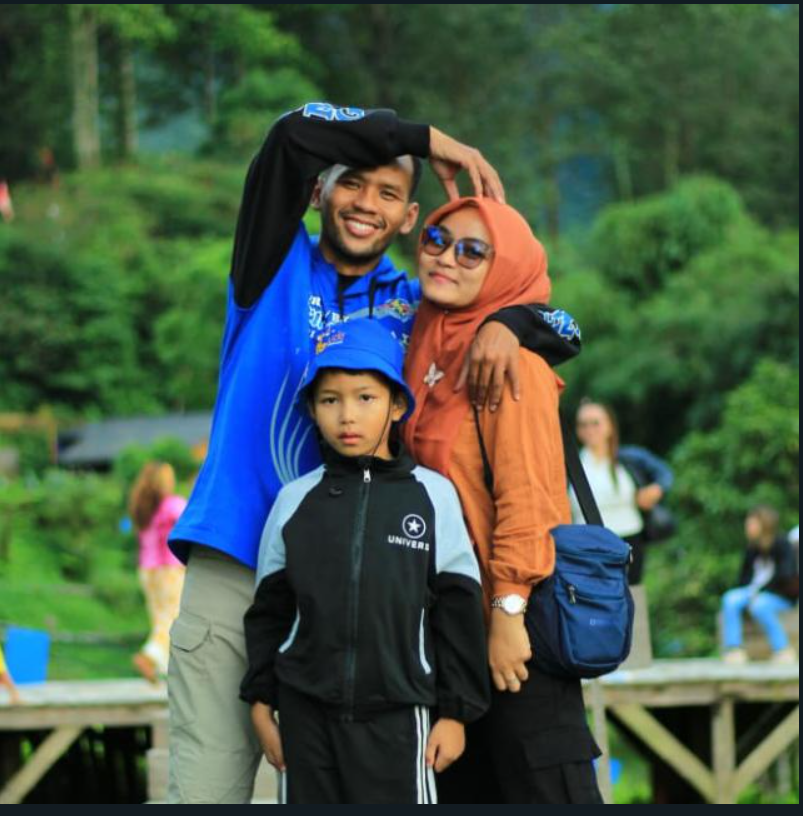

Daftar Guru
| Foto | Nama | Jabatan | Keterangan |
|---|---|---|---|
| DEWI REXAR GIRI KUSUMAH, M.Pd | Kepala Sekolah | Kepala Sekolah | |
| YANTI PERMASIH, S.Pd | Guru | Guru Kelas II A | |
| PATRICIA OKTAVIANI, S.Pd | Guru | Guru Kelas VI B | |
| R.EMID MAHMUDIN, S.Pd | Guru | Guru Kelas IV C | |
|  | M.SAHLAN NAZARI, S.Pd | Guru | Guru Kelas IV A |